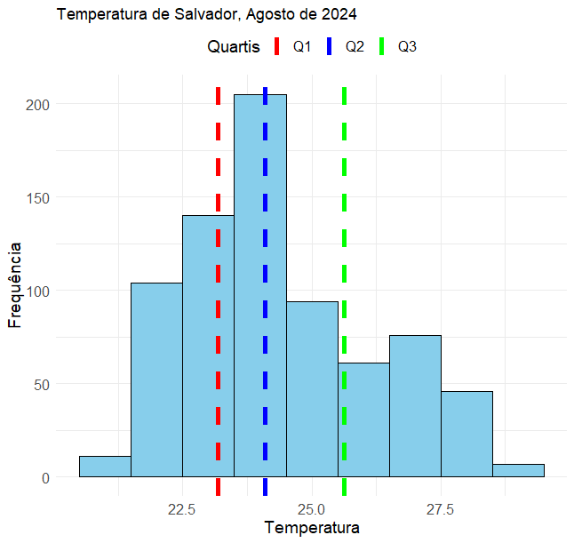
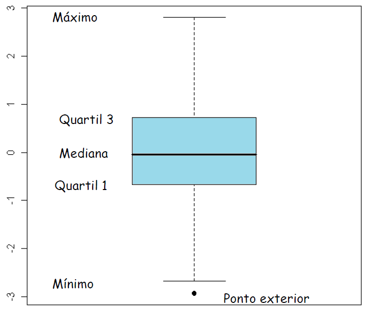
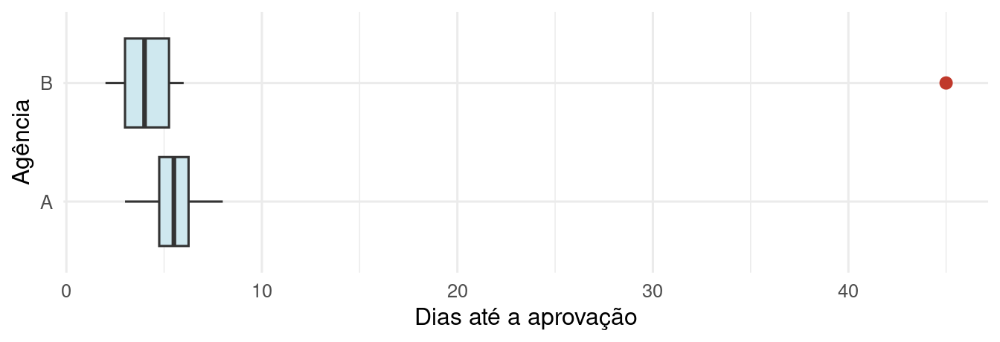
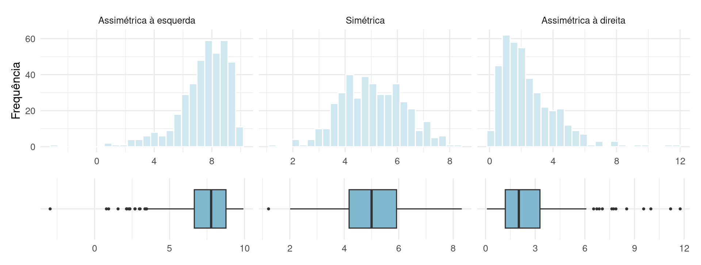
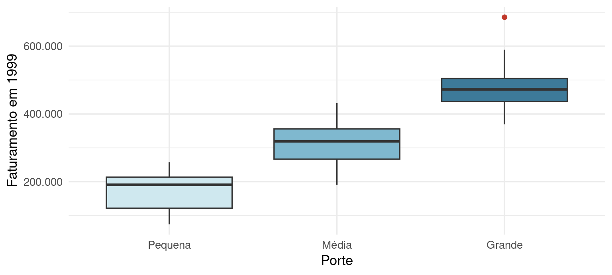
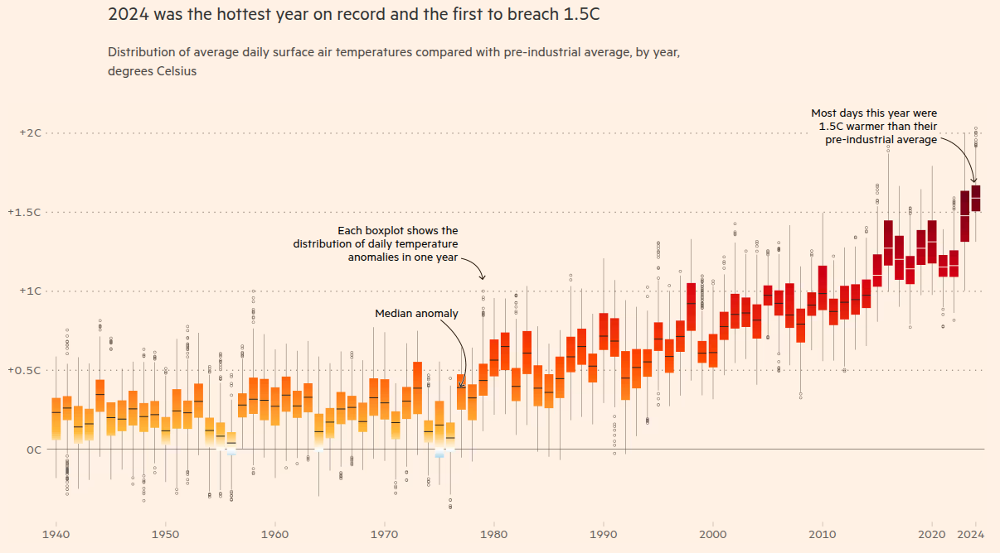
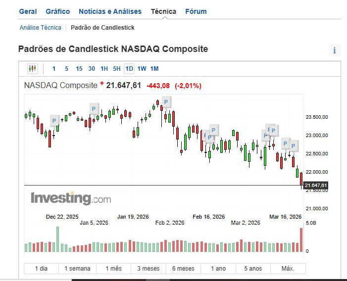
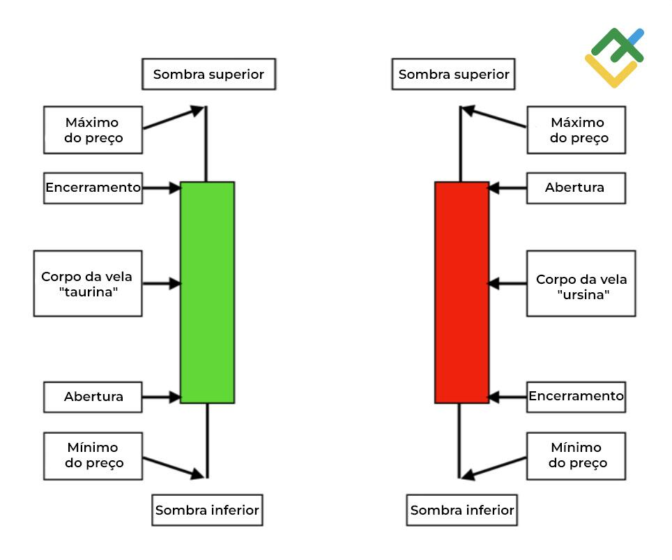
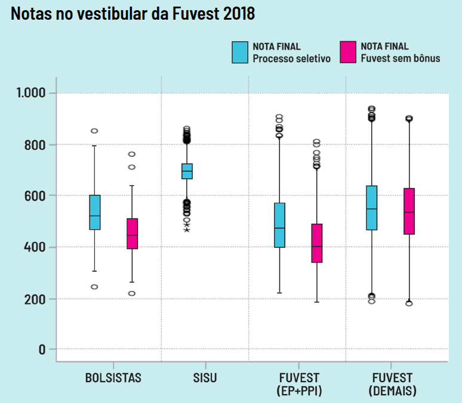

1.5 Medidas de dispersão: amplitude, quantis, variância e coeficiente de variação
Medidas de tendência central resumem os dados com um único valor, mas não informam o quanto eles variam. Duas cidades podem ter a mesma temperatura média e climas muito diferentes; duas ações, o mesmo retorno médio e riscos muito diferentes. Esta seção apresenta as separatrizes (quantis, quartis, boxplot) e as medidas de dispersão (amplitude, variância, desvio padrão, coeficiente de variação).
1.5.1 Percentis
A mediana deixa 50% dos dados abaixo e 50% acima: é o percentil 50. De forma geral:
O percentil \(P\)% é o número tal que \(P\)% dos valores observados estão abaixo dele.
Figura 1.27: Percentil nas notícias. Fonte: O Globo (12/04/2023).
Um bebê de percentil 6 em tamanho é aquele em que 94% dos bebês na mesma idade gestacional são maiores. Não é “6% do tamanho normal” nem “6% menor que a média”.
Algoritmo geral do percentil \(P\)% (o usado neste curso):
- Ordene os \(n\) valores em ordem crescente.
- Calcule \(k = P \cdot n / 100\).
- Se \(k\) for inteiro, o percentil é a média dos valores nas posições \(k\) e \(k + 1\); se não for inteiro, arredonde \(k\) para cima e use o valor nessa posição.
Exemplo. Dados ordenados \(18, 21, 23, 24, 28\) (\(n = 5\)):
| Percentil | \(k = P \cdot n/100\) | Regra | Resultado |
|---|---|---|---|
| 25 | 1,25 | não inteiro: posição 2 | 21 |
| 40 | 2 | inteiro: média das posições 2 e 3 | \((21 + 23)/2 = 22\) |
| 50 | 2,5 | não inteiro: posição 3 | 23 |
| 75 | 3,75 | não inteiro: posição 4 | 24 |
x <- c(18, 21, 23, 24, 28)
quantile(x, probs = c(0.25, 0.40, 0.50, 0.75), type = 2) # type = 2 reproduz o algoritmo acima## 25% 40% 50% 75%
## 21 22 23 24Uso do R. A função quantile() tem nove algoritmos (type = 1 a 9). O padrão (type = 7)
interpola entre posições e pode dar valores ligeiramente diferentes dos da conta à mão. Para conferir
exercícios deste curso, use type = 2.
1.5.2 Quartis e distância interquartil
Os quartis dividem os dados ordenados em quatro partes: \(Q_1\) (percentil 25), \(Q_2\) (mediana) e \(Q_3\) (percentil 75). Leituras equivalentes: 75% dos valores estão acima de \(Q_1\); 25% estão acima de \(Q_3\); 50% estão entre \(Q_1\) e \(Q_3\).
A distância interquartil mede a variabilidade dos 50% centrais:
\[ IQR = Q_3 - Q_1. \]
Exemplo: duas turmas com \(n = 8\).
| Turma | Notas ordenadas | \(Q_1\) (\(k = 2\)) | Mediana (\(k = 4\)) | \(Q_3\) (\(k = 6\)) | \(IQR\) |
|---|---|---|---|---|---|
| X | 5, 6, 6, 7, 7, 8, 8, 9 | \((6+6)/2 = 6\) | \((7+7)/2 = 7\) | \((8+8)/2 = 8\) | 2 |
| Y | 2, 3, 5, 7, 7, 9, 10, 10 | \((3+5)/2 = 4\) | \((7+7)/2 = 7\) | \((9+10)/2 = 9{,}5\) | 5,5 |
As duas turmas têm a mesma mediana, mas os 50% centrais da turma Y ocupam uma faixa quase três vezes maior: a turma Y é mais heterogênea.

Figura 1.28: Temperatura em Salvador, agosto de 2024: Q1 = 23,2 °C, Q2 = 24,1 °C e Q3 = 25,6 °C. Fonte: INMET.
Em Salvador, 50% das temperaturas registradas em agosto de 2024 ficaram entre 23,2 °C e 25,6 °C: \(IQR = 2{,}4\) °C. Como \(Q_2 - Q_1 = 0{,}9\) e \(Q_3 - Q_2 = 1{,}5\), a metade superior está mais espalhada.
Exercício 7. Duas notícias usam percentis (abaixo). A definição de “percentil 50” da primeira está correta? O que significa o percentil da segunda?
Figura 1.29: Percentis em notícias. Fontes: Terra; BBC News Brasil (22/08/2022).
Primeira notícia: errada. O percentil 50 é a mediana, não a média (a própria notícia descreve a mediana logo em seguida: “metade dos bebês pesa mais e a outra metade, menos”). Segunda: percentil acima de 97 quer dizer pontuação maior que a de 97% das pessoas avaliadas; só cerca de 3% ficam acima.
1.5.3 Boxplot
O boxplot (diagrama de caixa) é construído a partir dos quartis e mostra, ao mesmo tempo, tendência central, variabilidade, simetria e valores atípicos.

Figura 1.30: Elementos do boxplot. Fonte: notas de aula de MAT236 (UFBA).
Construção passo a passo:
- Calcule \(Q_1\), \(Q_2\), \(Q_3\) e \(IQR = Q_3 - Q_1\).
- Calcule os limites: \(LI = Q_1 - 1{,}5 \times IQR\) e \(LS = Q_3 + 1{,}5 \times IQR\).
- Desenhe a caixa de \(Q_1\) a \(Q_3\), com uma linha na mediana.
- Os bigodes vão da caixa até o menor e o maior valor observado dentro de \([LI, LS]\).
- Cada valor fora de \([LI, LS]\) é marcado individualmente: é uma observação atípica (outlier).
Exemplo: tempo de aprovação de crédito (dias) em duas agências.
- Agência A: \(3, 4, 5, 5, 6, 6, 7, 8\). \(Q_1 = 4{,}5\), \(Q_2 = 5{,}5\), \(Q_3 = 6{,}5\), \(IQR = 2\), limites \([1{,}5;\ 9{,}5]\): sem outliers.
- Agência B: \(2, 3, 3, 4, 4, 5, 6, 45\). \(Q_1 = 3\), \(Q_2 = 4\), \(Q_3 = 5{,}5\), \(IQR = 2{,}5\), limites \([-0{,}75;\ 9{,}25]\): 45 é outlier e o bigode superior para em 6.

Figura 1.31: Boxplots dos tempos de aprovação nas duas agências.
Pela média, B leva 9 dias e A, 5,5; mas 7 dos 8 processos de B levaram no máximo 6 dias. A mediana e o \(IQR\) descrevem o processo típico sem serem distorcidos pelo caso de 45 dias.
A posição da mediana dentro da caixa e o comprimento dos bigodes revelam a forma da distribuição: em uma distribuição assimétrica à direita, a mediana fica mais perto de \(Q_1\), o bigode direito é mais longo e os outliers aparecem à direita.

Figura 1.32: Histogramas e boxplots de distribuições assimétrica à esquerda, simétrica e assimétrica à direita (dados simulados).
Boxplots lado a lado são a forma mais eficiente de comparar grupos:
ggplot(empresas, aes(x = porte, y = faturamento99, fill = porte)) +
geom_boxplot(show.legend = FALSE, outlier.color = "#c0392b") +
scale_fill_manual(values = c("#cfe8ef", "#7fb8cf", "#3d7a99")) + scale_y_continuous(labels = num_br) +
labs(x = "Porte", y = "Faturamento em 1999") + theme_minimal(base_size = 13)

Figura 1.33: Boxplots das anomalias diárias de temperatura global, um por ano: a mediana sobe desde 1980. Fonte: Financial Times.
Boxplot não é gráfico de velas. Em finanças, o gráfico de velas (candlestick) também tem “caixa e hastes”, mas o corpo vai do preço de abertura ao de fechamento de um período, as hastes vão ao máximo e ao mínimo, e a cor indica alta ou baixa. O boxplot resume a distribuição de muitos valores; a vela resume a trajetória de um preço em um período.


Figura 1.34: Gráfico de velas do índice NASDAQ e a leitura de uma vela. Fontes: Investing.com; LiteFinance.
Exercício 8 (FUVEST 2018). O gráfico mostra as notas no vestibular da USP em 2018: em azul, a nota final no processo seletivo (com bônus); em rosa, a nota na Fuvest sem bônus. a) Qual grupo e tipo de nota tem a mediana mais alta? b) E a menor variabilidade? c) Entre as notas do processo seletivo, qual grupo teve a nota mais alta? d) Entre as notas Fuvest sem bônus, qual grupo tem o menor percentil 25? e) O bônus ajudou os bolsistas?

Figura 1.35: Notas no vestibular da Fuvest 2018. Fonte: Jornal da USP.
a) A nota final do SISU (mediana perto de 700). b) Também o SISU (caixa mais baixa, embora com muitos outliers). c) FUVEST (Demais): o ponto mais alto, perto de 940; a pergunta é sobre a maior nota, não sobre a maior mediana. d) FUVEST (EP+PPI): \(Q_1\) perto de 340. e) Entre os bolsistas, a caixa com bônus está acima da caixa sem bônus (medianas de cerca de 520 e 445): o bônus elevou as notas finais. Saber se os bolsistas tiveram bom desempenho depois, na graduação, exigiria outros dados.
1.5.4 Amplitude total
\[ AT = x_{\max} - x_{\min}. \]
É simples, mas usa só dois valores e é muito influenciada por outliers. Na manchete “variação térmica de 16 °C” (abaixo), o número é uma amplitude total.
Figura 1.36: Amplitude total nas notícias. Fonte: CNN Brasil.
1.5.5 Variância e desvio padrão
Exemplo: notas de dois alunos. Aluno A: \(2, 10, 6, 6, 6\). Aluno B: \(2, 6, 10, 4, 8\). Os dois têm média 6 e amplitude total 8, mas as notas de B estão mais espalhadas. Como medir isso?
Os desvios em relação à média, \(x_i - \bar x\), sempre somam zero, para qualquer conjunto de dados:
\[ \sum_{i=1}^{n}(x_i - \bar x) = \sum_{i=1}^{n} x_i - n\,\bar x = n\,\bar x - n\,\bar x = 0. \]
Elevando os desvios ao quadrado antes de tirar a média, eles deixam de se cancelar:
| Desvios \(x_i - 6\) | Quadrados | Média dos quadrados | |
|---|---|---|---|
| A | \(-4, 0, 0, 0, 4\) | \(16, 0, 0, 0, 16\) | \(32/5 = 6{,}4\) |
| B | \(-4, -2, 0, 2, 4\) | \(16, 4, 0, 4, 16\) | \(40/5 = 8\) |
A variância de \(x_1, \ldots, x_n\) é a média dos desvios ao quadrado, e o desvio padrão é a sua raiz:
\[ var(X) = \frac{1}{n}\sum_{i=1}^{n}(x_i - \bar x)^2, \qquad dp(X) = \sqrt{var(X)}. \]
A variância está em unidades ao quadrado (reais², °C²); o desvio padrão está na mesma unidade dos dados. Aluno A: \(dp = \sqrt{6{,}4} \approx 2{,}53\) pontos; aluno B: \(dp = \sqrt{8} \approx 2{,}83\) pontos.
Exemplo: temperatura em duas cidades, em cinco horários. Cidade A: \(24, 26, 32, 28, 25\). Cidade B: \(20, 26, 36, 28, 25\). As duas têm média 27 °C e o mesmo \(IQR\) (3 °C), mas:
| \(x_i\) (A) | \(x_i - 27\) | \((x_i - 27)^2\) | \(x_i\) (B) | \(x_i - 27\) | \((x_i - 27)^2\) | |
|---|---|---|---|---|---|---|
| 24 | \(-3\) | 9 | 20 | \(-7\) | 49 | |
| 26 | \(-1\) | 1 | 26 | \(-1\) | 1 | |
| 32 | 5 | 25 | 36 | 9 | 81 | |
| 28 | 1 | 1 | 28 | 1 | 1 | |
| 25 | \(-2\) | 4 | 25 | \(-2\) | 4 | |
| Soma | 0 | 40 | Soma | 0 | 136 |
\(var(A) = 40/5 = 8\), \(dp(A) \approx 2{,}83\) °C; \(var(B) = 136/5 = 27{,}2\), \(dp(B) \approx 5{,}22\) °C. O desvio padrão de B é quase o dobro do de A: a variância enxerga o que o \(IQR\), restrito aos 50% centrais, não enxergava.
Uso do R: divisor \(n\) ou \(n - 1\)? As funções var() e sd() do R dividem por \(n - 1\) (a versão
amostral, usada para estimar a variância de uma população em Inferência Estatística
(Wooldridge, 2016)). Neste curso e nas provas usamos o divisor \(n\), como no formulário. Para a
cidade B, var(c(20, 26, 36, 28, 25)) dá 34, enquanto a fórmula do curso dá 27,2.
var_n <- function(x) mean((x - mean(x))^2)
b <- c(20, 26, 36, 28, 25)
c(var_n = var_n(b), dp_n = sqrt(var_n(b)), var_R = var(b))## var_n dp_n var_R
## 27.200000 5.215362 34.0000001.5.6 Coeficiente de variação
Dados de magnitude maior tendem a ter desvio padrão maior. Para comparar a variabilidade de dados de naturezas diferentes, normalizamos pela média:
\[ CV(X) = \frac{dp(X)}{\bar x}. \]
O \(CV\) é adimensional e costuma ser apresentado em porcentagem.
| Variável | Média | \(AT\) | \(dp\) | \(CV\) |
|---|---|---|---|---|
| Temperatura da cidade B (°C) | 27 | 16 | 5,22 | 19% |
| Notas do aluno B (pontos) | 6 | 8 | 2,83 | 47% |
Em valor absoluto, a temperatura “varia mais”; relativamente à própria média, as notas são mais de duas vezes mais dispersas.
dp_n <- function(x) sqrt(mean((x - mean(x))^2))
empresas |> summarise(cv_faturamento = dp_n(faturamento99) / mean(faturamento99),
cv_empregados = dp_n(empregados99) / mean(empregados99))## # A tibble: 1 × 2
## cv_faturamento cv_empregados
## <dbl> <dbl>
## 1 0.315 1.12empresas |> group_by(porte) |> summarise(n = n(), cv_faturamento = dp_n(faturamento99) / mean(faturamento99))## # A tibble: 3 × 3
## porte n cv_faturamento
## <fct> <int> <dbl>
## 1 Pequena 13 0.309
## 2 Média 70 0.177
## 3 Grande 23 0.146Leitura econômica. Duas ações com retorno médio de 12% ao ano: a ação A rendeu \(8, 10, 12, 14\) e \(16\%\); a ação B, \(-30, 5, 15, 25\) e \(45\%\). Os desvios padrão são \(\sqrt{8} \approx 2{,}8\) e \(\sqrt{616} \approx 24{,}8\) pontos percentuais. Em finanças, o desvio padrão dos retornos é a medida mais simples de risco, e a média sozinha esconde que a ação B perdeu 30% em um dos anos.
Discussão. O \(CV\) pode enganar quando a média é próxima de zero (lucro que alterna prejuízos e lucros) e depende da escala quando o zero é arbitrário: temperaturas em Celsius e em Fahrenheit dão \(CV\) diferentes. Por que o \(CV\) é mais confiável para renda, peso ou número de empregados?